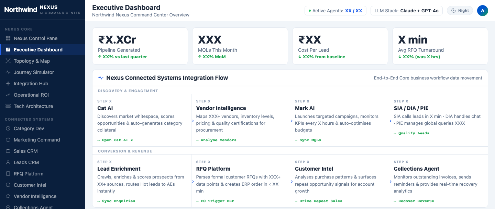
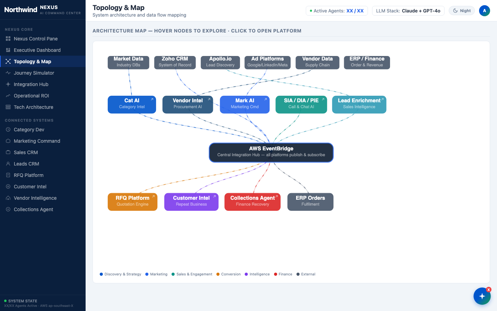
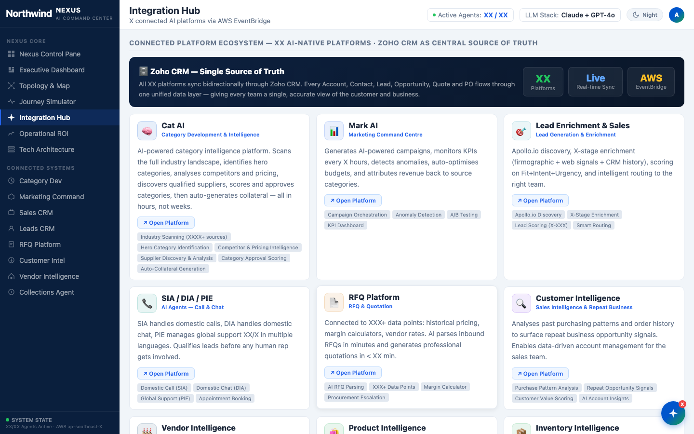
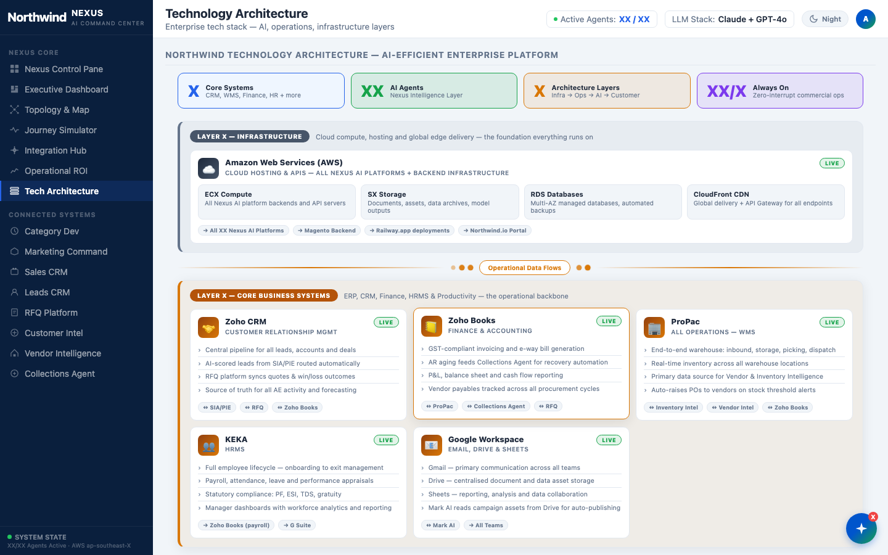
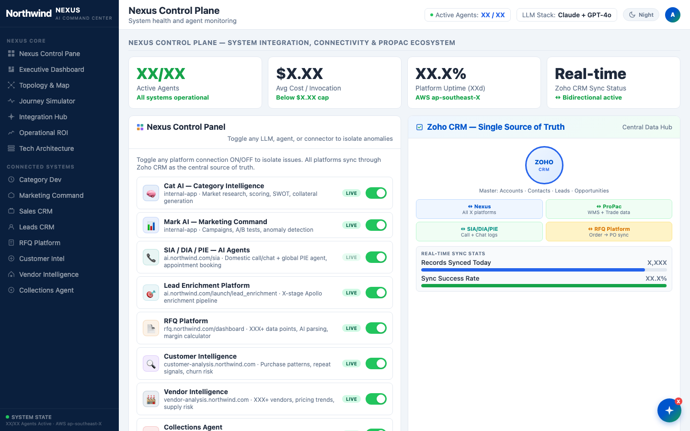

Agentic platform · work in progress
Nexus: Agentic Control Plane
An agentic platform that connects the company’s AI agents and platforms and gives management one holistic view of them, with a single kill switch.
As the number of production agents and AI platforms grew (category intelligence, marketing, voice and chat agents, lead enrichment, RFQ, customer and vendor intelligence, collections), each one ran and reported on its own. Nexus is being built with Claude Code as the layer above them: it connects every platform, shows management what the whole estate is doing in one place, and puts all of it behind one kill switch. It is work in progress.
- One integration hub: every platform publishes and subscribes through AWS EventBridge rather than point-to-point links.
- One source of truth: Zoho CRM is the system of record, synced both ways with every platform.
- One management view: an executive dashboard and a topology map across all connected platforms and agents.
- One control plane: any LLM, agent or connector can be switched off to isolate a problem, and a single kill switch stops everything.
- Built with Claude Code.
Captured from the Nexus prototype. The company is shown as the fictional Northwind, every figure is masked with “X”, and internal system addresses are replaced, all in the page before capture. The dashboard’s charts are drawn on a canvas that can’t be masked, so that view stops above them.
-

01The executive dashboard: headline KPIs and the end-to-end flow across every connected platform, from discovery and engagement to conversion and revenue. -

02The topology: data sources feed the AI platforms, all connected through AWS EventBridge as the central integration hub. -

03The integration hub: each connected platform, what it does, and Zoho CRM as the single source of truth. -

04The technology architecture, layered from AWS infrastructure through the core business systems. -

05The control plane: every platform and agent has its own on/off switch to isolate issues, next to live sync status with the CRM.
{kind=link}
{kind=link}
{kind=link}
{kind=link}
{kind=link}